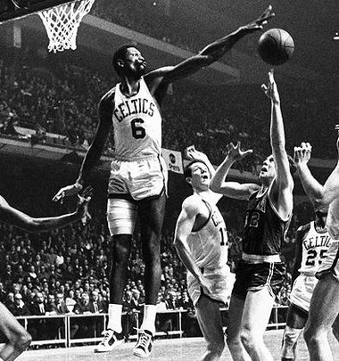

.jfif)
Historia koszykówki
Koszykówka to gra sportowa, jeden z najpopularniejszych sportów. Koszykarze charakteryzują się szerokim polem widzenia i dobrze rozwiniętym wzrokiem. Koszykówka to emocjonująca gra, która poprawia nastrój. Od swojego powstania koszykówka przeszła wiele zmian i udoskonaleń. Poprawiono technikę i taktykę gry, doprecyzowano zasady rozgrywania i sędziowania, ustabilizowano wymiary boiska i jego oznakowanie; ekwipunek. Gra rozpowszechniła się na całym świecie, zaczęto organizować liczne spotkania i zawody w koszykówkę. Powstał holistyczny pedagogiczny system szkolenia koszykarzy.
Historia rozwoju koszykówki to zespołowa gra sportowa, której celem jest wrzucenie piłki rękami do wysokiego ringu. Pomysł rzucania piłką do ringu lub kosza narodził się dawno temu. Podobne gry znali ludzie żyjący ponad 1000 lat temu, a także ludy Ameryki Środkowej i Południowej . Zasady gry w koszykówkę zostały opracowane w USA przez dr J. Naismitha (1861-1939) w 1891 roku. Zasady te zostały opublikowane w 1894 roku, który uważany jest za rok narodzin koszykówki.
Ogólna charakterystyka gry - Pierwsze drużyny koszykówki nie składały się z pięciu graczy, jak dzisiaj, ale z dziewięciu. Ponadto koszykarz po otrzymaniu piłki nie mógł się z nią ruszyć nawet o krok, gdyż oznaczało to naruszenie przepisów. Teraz koszykarz ma prawo poruszać się z piłką po boisku, koniecznie uderzając ją o podłogę. Jeśli zawodnik nie wypuści piłki z rąk, ma prawo zrobić nie więcej niż dwa kroki.
Po zatrzymaniu zawodnik nie może już ponownie rozpocząć ruchu z piłką: należy ją podać partnerom lub rzucić wokół ringu. Koszykówka rozgrywana jest w dwóch połowach po 20 minut czasu netto (stoper zatrzymuje się po każdym gwizdku sędziego). Gra dla chłopców i dziewcząt w wieku 15-16 lat trwa 30 minut, a dla chłopców i dziewcząt w wieku 13-14 lat - 24 minuty. Przerwa między połowami wynosi 10 minut.
Zawodnicy występują w majtkach, T-shirtach i tenisówkach. Na koszulce znajduje się nazwa drużyny oraz numer pod jakim zawodnik występuje w tym meczu.
może odbywać się na korcie otwartym oraz w hali o wysokości co najmniej 7 metrów. Rozmiar boiska to 26x14 metrów. Tarcza o wymiarach 180x120 cm montowana jest w odległości 120 cm od stojaka. Od dolnej krawędzi tarczy do podłogi lub ziemi powinno być 275 cm.Koszyk to metalowy pierścień pokryty siatką bez dna. Mocuje się go w odległości 0,3 m od dolnej krawędzi tarczy. We współczesnej koszykówce obowiązuje zasada 30 sekund. Tylko w tym czasie drużyna ma prawo do posiadania piłki, a jeśli rzut nie zostanie wykonany, sędziowie przyznają piłkę przeciwnikom.
W Europie koszykówka zaczęła się rozprzestrzeniać od 1920 roku, kiedy to przyjęli ją Francuzi, Rosjanie, Polacy, Czesi, a później mieszkańcy republik bałtyckich. W latach trzydziestych XX wieku koszykówka rozprzestrzeniła się w całej Europie. Po drugiej wojnie światowej koszykówka zyskała większy rozwój w ZSRR i krajach socjalistycznych, które osiągnęły światowe wyżyny w tym sporcie.
Międzynarodowa Federacja Koszykówki (FIBA) została zorganizowana w 1932 roku. Obecnie obejmuje ponad 150 krajowych federacji koszykówki, zrzeszających 113 milionów ludzi. Mistrzostwa Świata w Koszykówce odbywają się co 4 lata od 1950 roku dla mężczyzn i od 1953 roku dla kobiet, Mistrzostwa Europy odbywają się co 2 lata od 1935 roku dla mężczyzn i od 1938 roku dla kobiet. Koszykówka jest dyscypliną olimpijską dla mężczyzn od 1936 roku, a dla kobiet od 1976 roku. Od 1958 roku dla mężczyzn, a od 1959 roku dla kobiet, co roku odbywają się rozgrywki Pucharu Europy w koszykówce. Ponadto od 1967 roku rozgrywane są zawody o Puchar Zdobywców Pucharów dla mężczyzn.